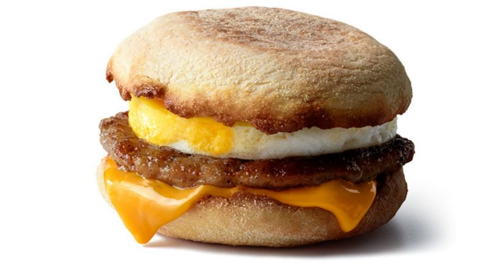

English Muffin

Description
This bad boy right here is a McMuffin. Arguably the best breakfast sandwich worldwide.Not much else to say other than go to McDonald's and get yourself one.
Ingredients
- Egg
- English Muffin Bread
- Sausage
- Ketchup
- Cheese
Steps
- First, place the bread in the oven at 100 degree Celsius and heat that thang up for 10 minutes
- Microwave your sausage and cheese together on a plate for 10 seconds
- Place your egg in the microwave for 30 seconds
- Place your sausage and melted cheese ingredients on your toasted bread
- Place you egg on the sandwich, apply ketchup, and enoy!!!